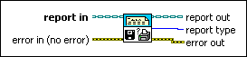

Report Type VI
Owning Palette: Advanced Report Generation VIs
Requires: Base Development System
Returns the report type, such as HTML, of a specified report.
This VI also returns Microsoft Word or Excel report types.

 Add to the block diagram Add to the block diagram |
 Find on the palette Find on the palette |